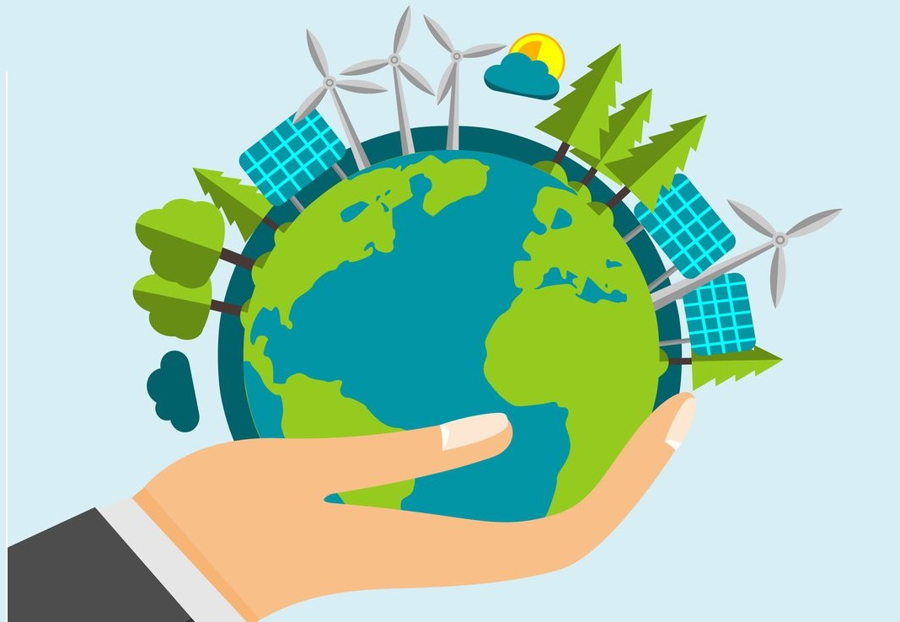
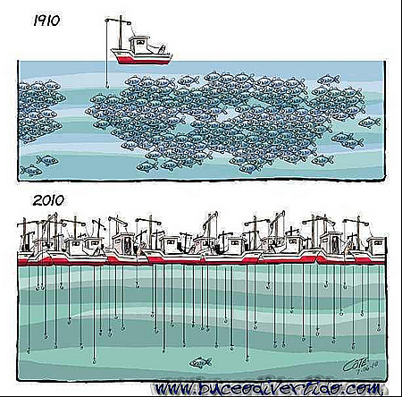

14.1 Até 2025, prevenir e reduzir significativamente a poluição marinha de todos os tipos, especialmente a advinda de atividades terrestres, incluindo detritos marinhos e a poluição por nutrientes.

14.2 Até 2020, gerir de forma sustentável e proteger os ecossistemas marinhos e costeiros para evitar impactos
adversos significativos, inclusive por meio do reforço da sua capacidade de resiliência, e tomar medidas para a
sua restauração, a fim de assegurar oceanos saudáveis e produtivos.
14.3 Minimizar e enfrentar os impactos da acidificação dos oceanos, inclusive por meio do reforço da cooperação
científica em todos os níveis.
O que é acidificação dos oceanos?
14.4 Até 2020, efetivamente regular a coleta, e acabar com a sobrepesca, ilegal, não reportada e não regulamentada e as práticas de pesca destrutivas, e implementar planos de gestão com base científica, para restaurar populações de peixes no menor tempo possível, pelo menos a níveis que possam produzir rendimento máximo sustentável, como determinado por suas características biológicas

14.5 Até 2020, conservar pelo menos 10% das zonas costeiras e marinhas, de acordo com a legislação nacional e internacional, e com base na melhor informação científica disponível
14.6 Até 2020, proibir certas formas de subsídios à pesca, que contribuem para a sobrecapacidade e a sobrepesca, e eliminar os subsídios que contribuam para a pesca ilegal, não reportada e não regulamentada, e abster-se de introduzir novos subsídios como estes, reconhecendo que o tratamento especial e diferenciado adequado e eficaz para os países em desenvolvimento e os países menos desenvolvidos deve ser parte integrante da negociação sobre subsídios à pesca da Organização Mundial do Comércio